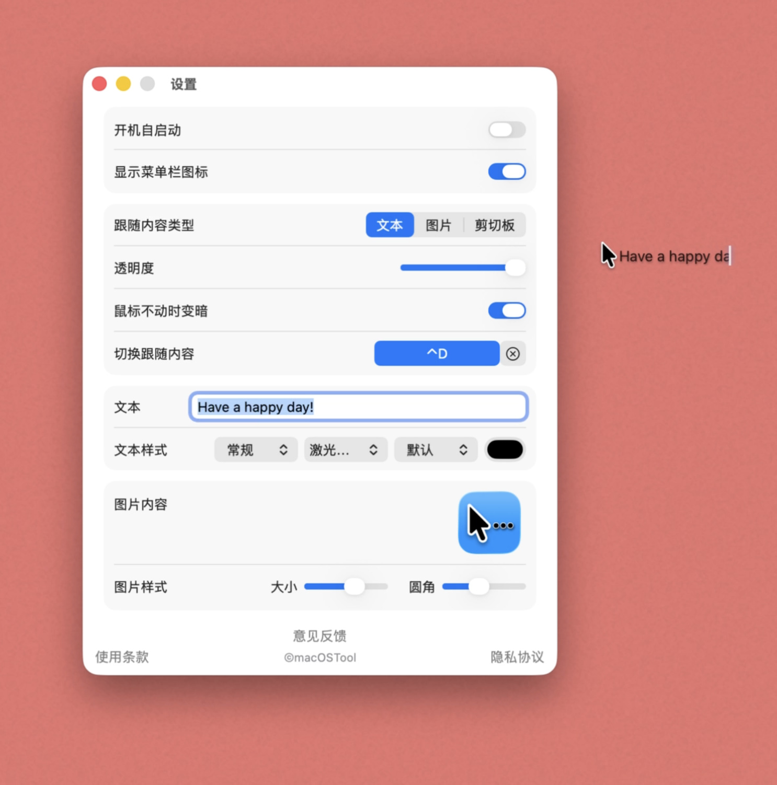
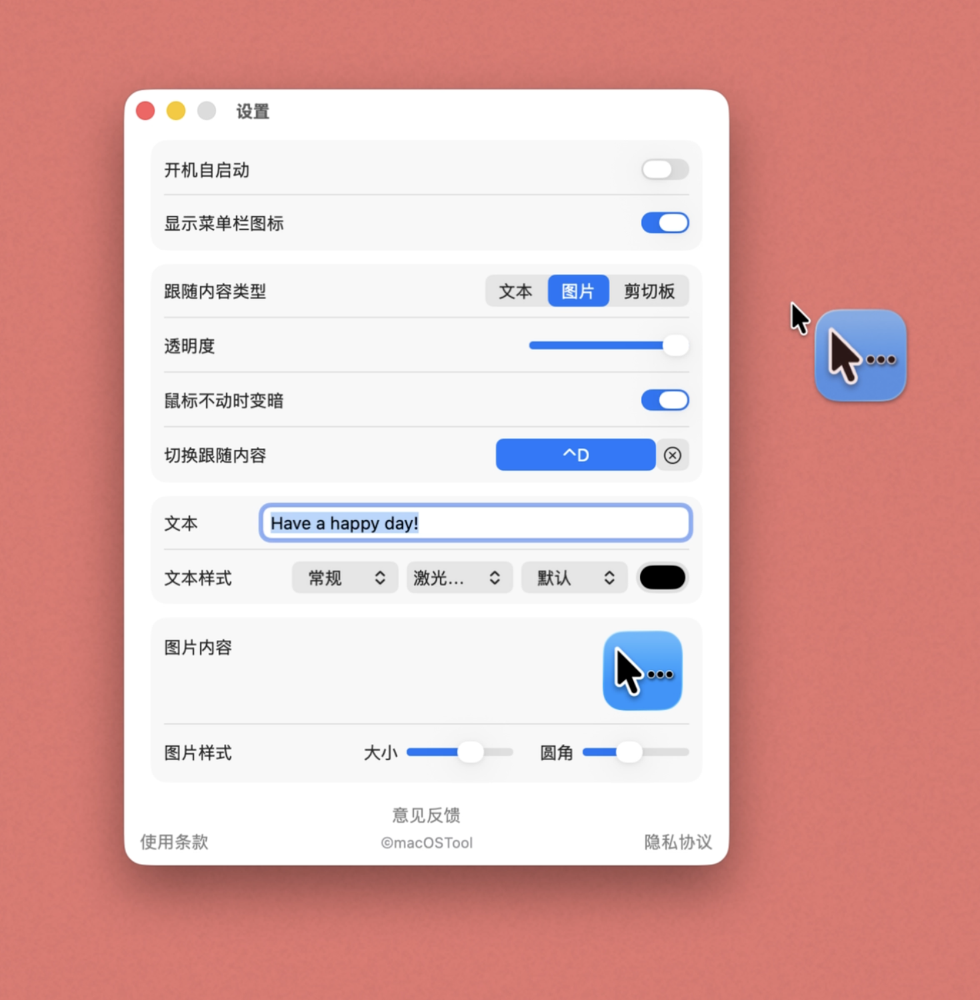
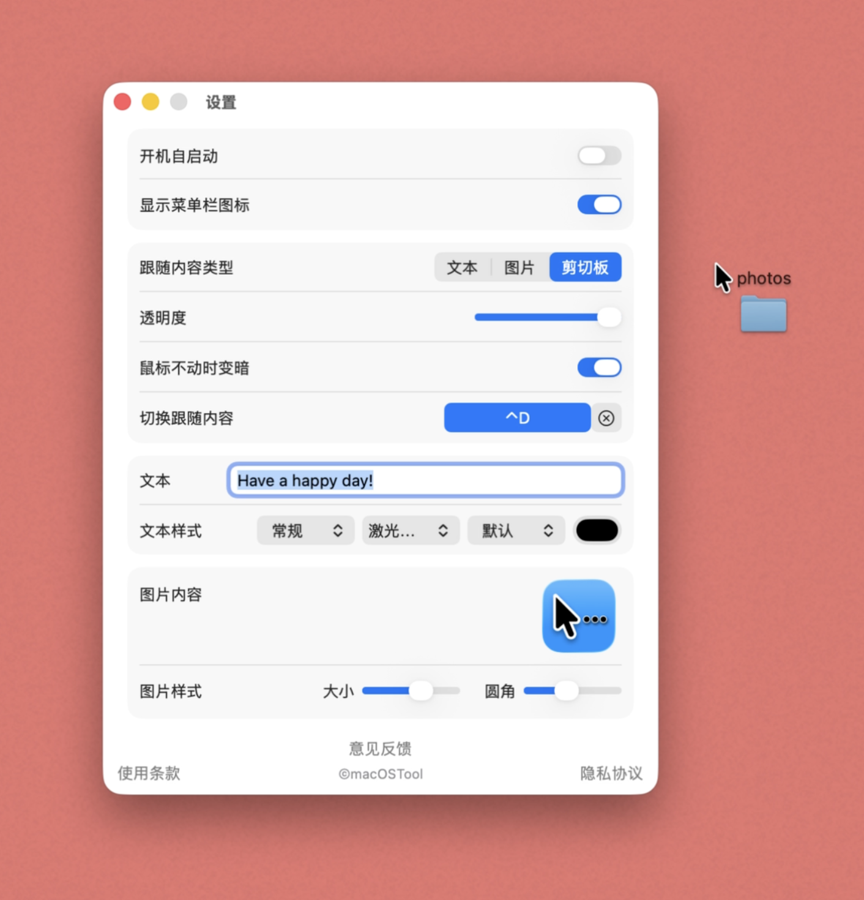

鼠标跟随(Cursor trailer)

功能介绍
这是一个让内容灵动跟随鼠标指针的增强工具



支持自定义文本、图片与剪贴板内容实时跟随鼠标
提供数十种精美字体、颜色设置及 4 种生动的专属动画
可自由调节跟随内容的透明度，使其与桌面背景完美融合
开启自动变暗功能，在鼠标静止不活动时智能避免干扰
设置全局快捷键，按下即可在文本、图片和剪贴板间瞬间切换
支持图片缩放与圆角大小调节，PNG 与 GIF 动图均能完美呈现
完美兼容多显示器切换，是演示演讲与桌面美化的绝佳利器